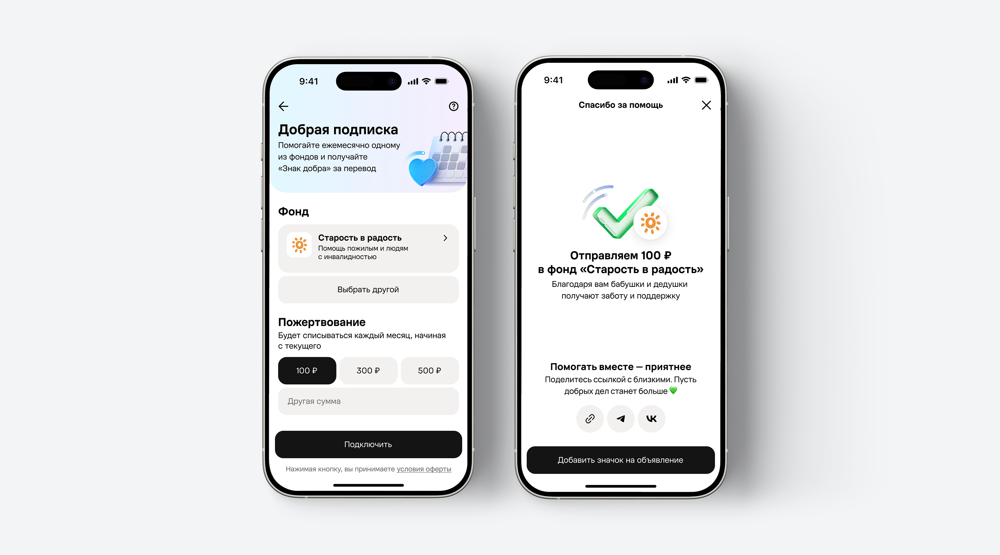
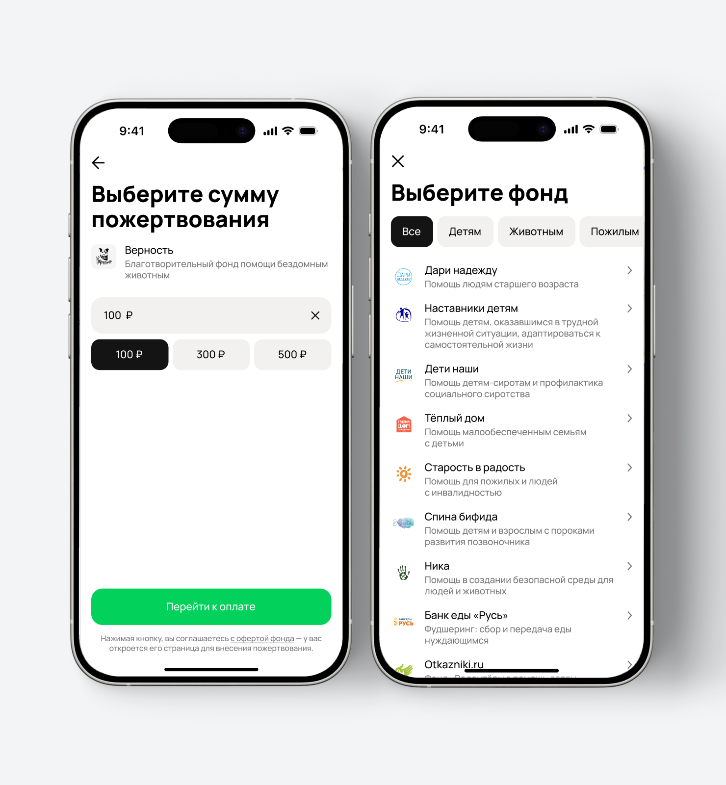
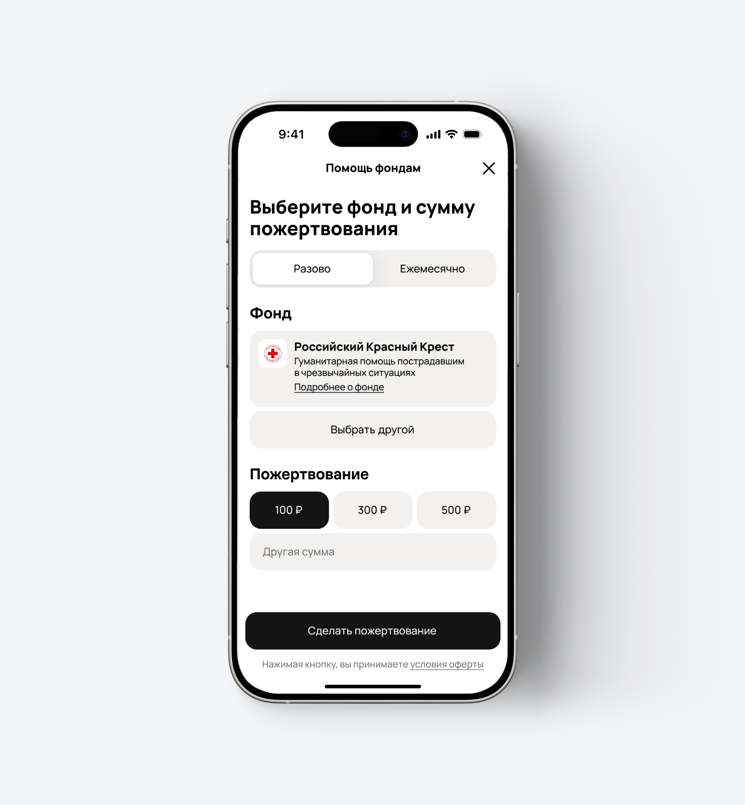
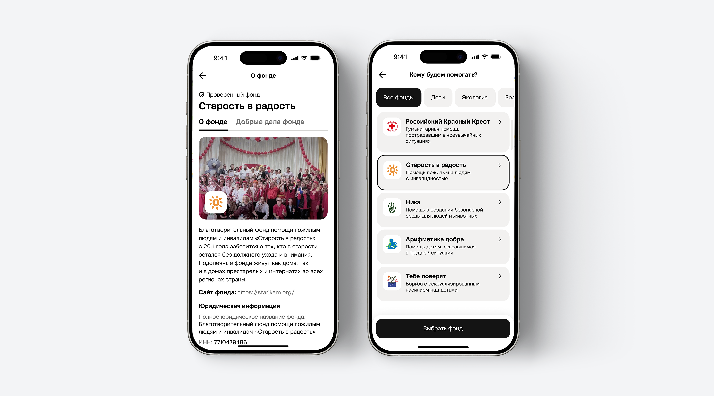
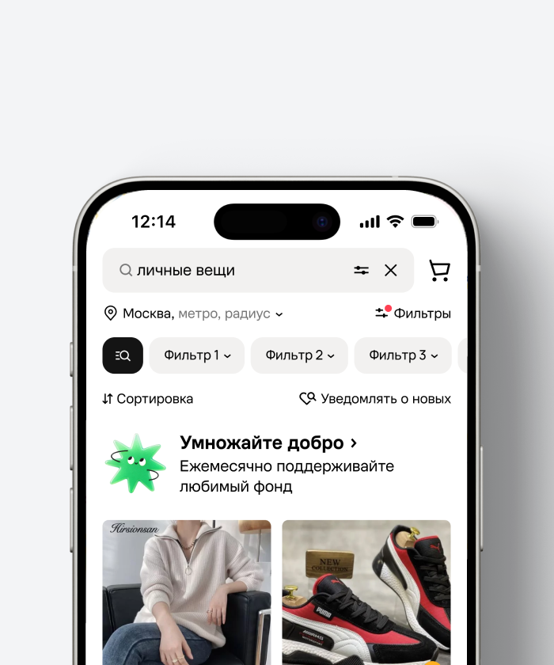
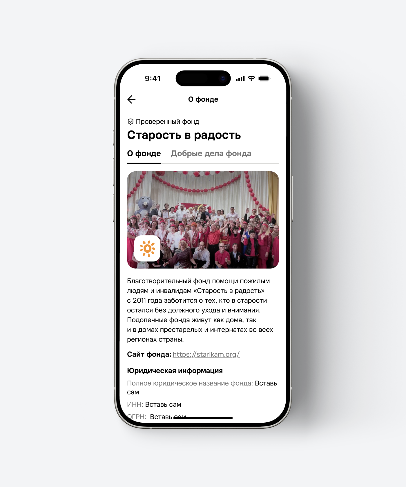

Добрая подписка
Проблема: на Авито можно было помогать фондам только разово — для постоянной поддержки приходилось повторять весь сценарий
Решение: спроектировала ежемесячную помощь: от выбора фонда и подключения до управления подпиской в профиле

О проекте
«Добрая подписка» — ежемесячное пожертвование фонду в благотворительном разделе Авито. Человек выбирает фонд и сумму, а следующие платежи проходят автоматически.
Регулярные поступления помогают фондам планировать работу. Для человека важно заранее понимать, кому пойдут деньги, когда повторится платёж и как изменить или отключить подписку.
В исследованиях люди просили отчёты и конкретные результаты работы фондов. Поэтому информацию о фонде добавили до подключения подписки.

Проблемы
Сценарий нужно было собрать вокруг трёх задач
Дать возможность помогать регулярно, без повторного прохождения всего сценария
Показать работу фонда до оплаты, чтобы человек мог решить, кому доверить помощь
Объединить оплату и благодарность: в charity-сценариях они выглядели по-разному
От разовой помощи к подписке
Собрала фонд, сумму и переключатель «Разово / Ежемесячно» на одном экране. Раньше выбор фонда и суммы были разнесены на два


Концепты
Проверяла 3D-персонажа на экране подписки и конфетти в благодарности. Персонаж занимал половину экрана — для настройки выбрала сдержанный вариант, в котором условия видны сразу. Эмоциональную анимацию оставила после оплаты


Точки входа
Подписку можно найти в выдаче объявлений, на charity-лендинге и после подачи объявления. В каждом месте предложение учитывает основную задачу человека


После подачи объявления предлагаем помощь, когда основная задача уже завершена. В выдаче знакомим с подпиской через компактный баннер, а на charity-лендинге подробнее раскрываем условия.
Выбор фонда
Перенесла выбор фонда на первый экран: до выбора суммы можно узнать о фонде, сменить его и открыть отчёты «Добрые дела фонда»

В разовом пожертвовании подставляем фонды из случайных категорий, чтобы помощь получали и менее популярные направления, помимо детей и животных.
Подключение подписки
На экране настройки собрала фонд, сумму и ежемесячность списаний. Можно выбрать 100, 300 или 500 ₽ либо указать свою сумму; пояснение о повторении платежа видно до подключения
Подробности вынесла в «Как это работает»: отсутствие комиссии, перечисление денег фондам напрямую, ежемесячный «Знак добра», изменение и отключение подписки. Основной экран остаётся компактным.
Благодарность после оплаты
Объединила благодарность в charity-сценариях: подтверждение действия, вклад человека и спасибо. Этот подход работает в полноэкранном формате, шторке и модальном окне

Для подписки экран подтверждает ежемесячную помощь и её условия. Добавила анимацию сердечек и два действия: поделиться и добавить «Знак добра» на объявление.
Около 2 000 показов благодарности в день — масштаб всех charity-сценариев, а не только подписки.
Управление подпиской
В профиле видны фонд, сумма и дата ближайшего платежа. Сумму можно изменить прямо в карточке, а в настройках — отключить подписку. Управление доступно и со страницы «Знака добра»


В MVP смена фонда требует отключения и новой подписки — это ограничение платёжной системы Юкассы. Смена фонда без отключения запланирована следующим шагом.


Результаты
Запустили регулярную помощь с подключением и управлением подпиской. Выбор фонда дополнили информацией о его работе
≈55
Новых подписок в день
+64%
Средний платёж выше минимального
≈1 300
Открытий отчётов фондов в день
Эти показатели описывают использование продукта. Чтобы оценить устойчивость регулярной помощи, дальше нужно измерить повторные списания, отмены и конверсию каждой точки входа.


